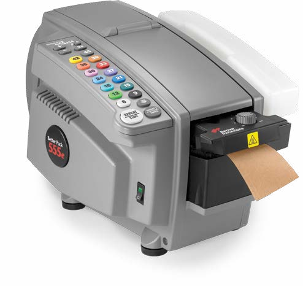
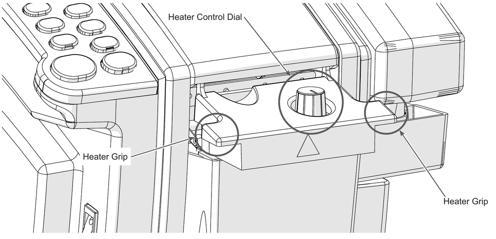
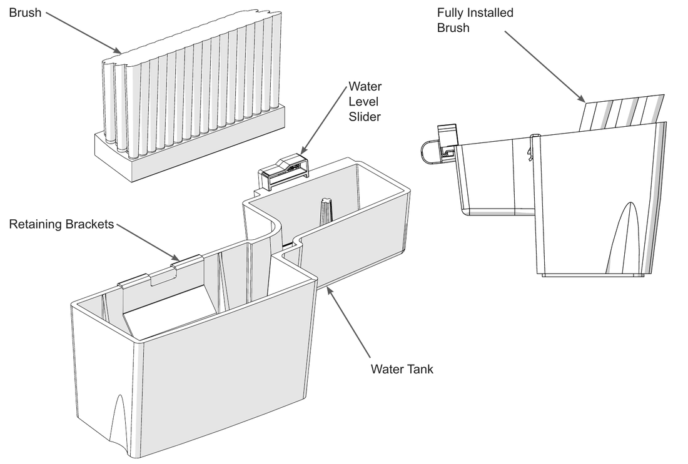

Every BP555 control, explained
One slide per button, switch and dial: what it is, where it is, what it does, which machines have it and the mistake to avoid.
Supplied by Cotswold Packaging Group
Based on the Better Packages 555e User Manual, Rev 3.1

The eleven controls
- 1
- Main Power Switch
- 2
- Heater Control Dial
- 3
- Water Level Slider, right side of the tank
- 4
- + add half an inch
- 5
- A Automatic Mode and its red light
- 6
- - take off half an inch
- 7
- 2x double
- 8
- 14 length buttons
- 9
- Random hold to feed
- 10
- REPEAT START
- 11
- REPEAT 2 ENTER
1 Main Power Switch
- Type
- Rocker switch
- Where
- Lower front panel, below the keypad
- Does
- I is on. O is off.
- You hear
- A beep once the machine has started up and is ready to use.
- Models
- All
- Watch out
- Switching off wipes any Automatic Mode program. If there is no beep at a working socket, call for service.
2 Heater Control Dial

Manual, Figure 23.
- Type
- Rotary knob
- Where
- On top of the heater, above the water tank
- Does
- Sets the heat. Marked OFF, five dots, then MAX. Leaves the factory on OFF.
- You see
- The dial position. Some machines have a limiter that stops it turning past a set point.
- Models
- All. Every 555e uses the same heater.
- Watch out
- In a heated or climate-controlled building, halfway is enough and the heater lasts longer. The underside is hot: handle it by the grip tabs, or wait 30 minutes.
3 Water Level Slider

Manual, Figure 19.
- Type
- Sliding tab
- Where
- Right side of the water tank
- Does
- Towards the machine raises the water level and wets the tape more. Away from the machine lowers it.
- You see
- Properly wet tape feels oily and pulls strings of glue when two wet pieces are pulled apart.
- Models
- All
- Watch out
- Too low gives tacky, dry tape that will not bond. Too high gives watery tape that slips and sets slowly.
4 Plus
+
- Type
- Keypad button
- Where
- Top left of the keypad
- Does
- Adds half an inch (13 mm) to the length you press next. Twice adds one inch.
- Example
- +24 gives 24.5 in. ++24 gives 25 in.
- Models
- All
- Watch out
- Press it before the length button. The length button dispenses straight away.
5 A and the Automatic Mode light
- Type
- Keypad button with a red indicator light beside it
- Where
- Top right of the keypad
- Does
- First press turns Automatic Mode on. Next press turns it off and returns to normal use.
- You see and hear
- A beep, and the light next to A glows red while Automatic Mode is on.
- Models
- Automatic models only eSA eLA eMA eFA eJA
- Watch out
- Pressing A to turn it off also wipes the stored lengths.
6 Minus
-
- Type
- Keypad button
- Where
- Second row, left, under +
- Does
- Takes half an inch (13 mm) off the length you press next. Twice takes off one inch.
- Example
- -24 gives 23.5 in. --24 gives 23 in.
- Models
- All
- Watch out
- Same rule as plus: adjustment first, then the length.
7 Double
2x
- Type
- Keypad button
- Where
- Second row, right, under A
- Does
- Doubles the length you press next. Gets you past 45 inches.
- Example
- 2x24 gives 48 in.
+++2x24 gives 49.5 in. - Models
- All
- Watch out
- Plus and minus are added after the doubling. Three presses of + with 2x still add 1.5 inches, not 3.
8 Length buttons
- Type
- 14 colour-coded keypad buttons
- Where
- Two columns down the middle of the keypad
- Does
- Press one and that length is wetted, fed out and cut straight away.
- Models
- Standard and automatic: 6 to 45 in. eL 12 to 90 in. eM eMA eJ eJA 15 to 145 cm.
- Watch out
- Choose any +, - or 2x first.
9 Random
Random
- Type
- Keypad button, marked with a down arrow
- Where
- Bottom of the right-hand column, under 9
- Does
- Feeds tape for as long as you hold it down. Let go and it stops.
- Use it for
- An odd length you have no button for. In Automatic Mode it can be one of the stored lengths.
- Models
- All
- Watch out
- It does not stop by itself. Release it when you have enough tape.
10 REPEAT START
REPEAT START
Normal use
Feeds the last length you dispensed again. One press per carton when you are sealing a run of the same size.
In Automatic Mode
Starts the stored program. The first length feeds out, and each piece after that comes out when you tear the last one off.
- Where
- Bottom left of the keypad, the large light grey key
- Models
- All
11 REPEAT 2 ENTER
REPEAT 2 ENTER
Normal use
Feeds the second-to-last length you dispensed. Useful when you alternate between two carton sizes.
In Automatic Mode
Stores the length you just dispensed. Press it after each piece you want in the program, up to three.
- Where
- Bottom right of the keypad, the large dark grey key
- Models
- Automatic models only eSA eLA eMA eFA eJA
Lookup table
| Control | What it does | Models |
|---|---|---|
| Main Power Switch | I on, O off. Beeps when ready. Off clears Automatic Mode. | All |
| Heater Control Dial | OFF, five dots, MAX. Halfway is enough indoors. | All |
| Water Level Slider | Towards the machine for wetter tape, away for drier. | All |
| + | Adds half an inch to the next length. Press before the length. | All |
| - | Takes half an inch off the next length. Press before the length. | All |
| 2x | Doubles the next length. | All |
| 6 to 45 | Feeds that length straight away. | All |
| Random | Feeds tape while held. | All |
| REPEAT START | Last length again. In Automatic Mode, runs the program. | All |
| REPEAT 2 ENTER | Second-to-last length. In Automatic Mode, stores a length. | Automatic |
| A and red light | Automatic Mode on and off. Off clears the program. | Automatic |